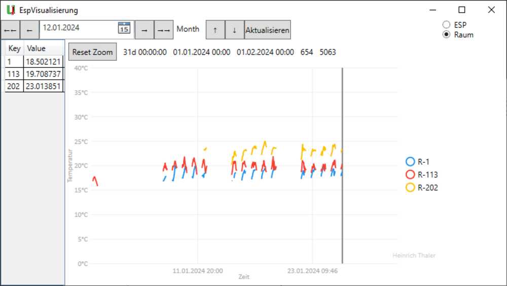
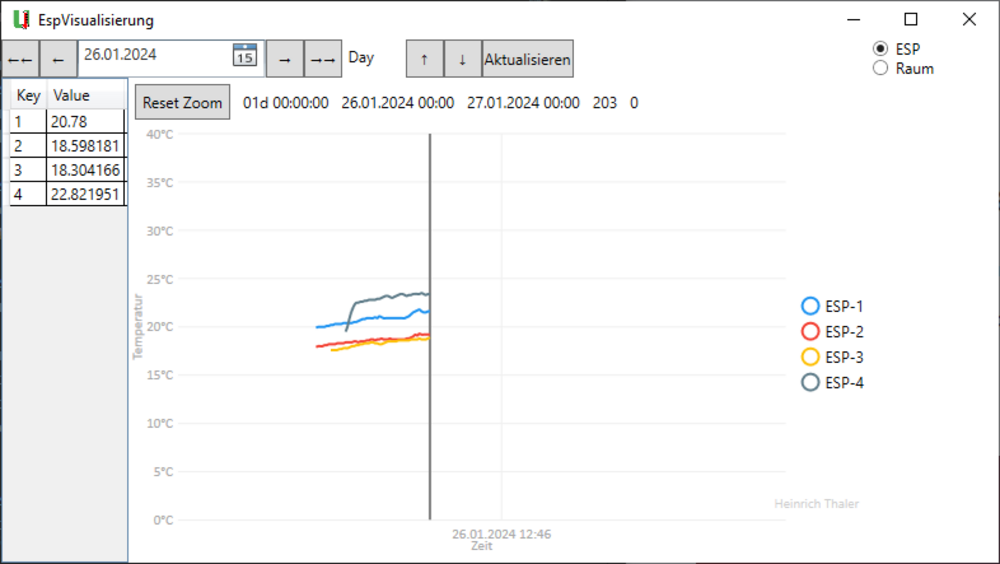

Temperaturlogging
Erstellt für: EDV-Schule Plattling
Abgegeben am: 01.02.2024
Beschreibung:
Ihm Rahmen des Projekts haben wir mehrere Mikrocontroller (ESP32) in verschiedene Räume des Schulhauses verteilt. Ein Dienst sammelt die aktuellen Temperaturen und speichert diese in einer Datenbank. Die Messwerte werden von Heinrich Thaler in einem Graphen dargestellt. Die Verwaltung der ESPs erfolgt über die von Felix Maier entwickelte ESPVerwaltung, mit der Geräte hinzugefügt, gelöscht und geändert werden können.
Weitere Teilnehmer: Heinrich Thaler
Verwendete Software & Hardware:
- Programmiersprache: C# WPF
- Bibliothek für Graph Visualisierung: LiveCharts
- Mikrocontroller: ESP32
- Temperatursensor: DHT22 AM2302
Galerie:

